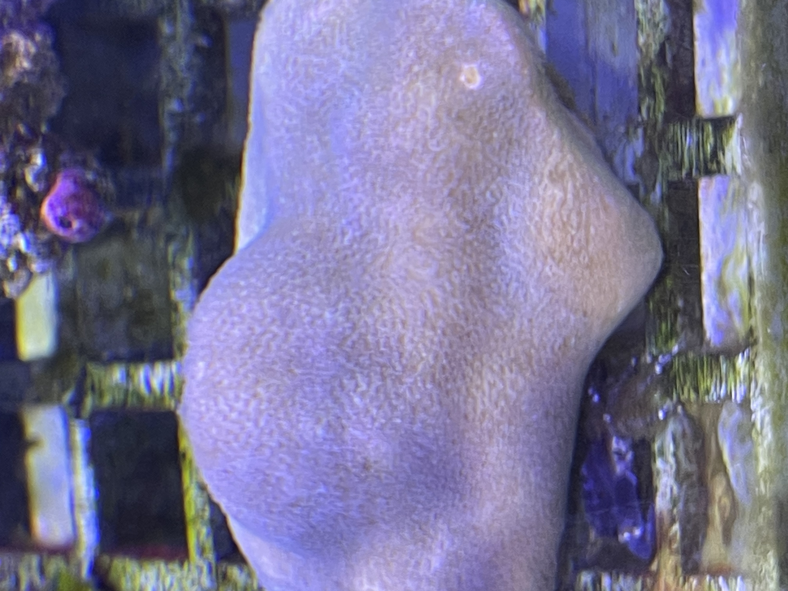

形态特征
滨珊瑚属群体形态多样，可以呈现块状、团块状、分枝状或板状等不同形态，其中块状和团块状最为常见。珊瑚虫非常小，珊瑚杯直径通常小于1毫米，密集分布在骨骼表面，肉眼看上去表面相对光滑细腻。骨骼结构致密坚硬，孔隙度较高，骨骼密度相对较低但韧性好。珊瑚杯之间的骨骼壁薄，形成精细的网状结构。活体珊瑚的颜色通常较为单一，常见黄褐色、浅褐色、灰褐色，偶尔会有紫色或蓝色的个体。
滨珊瑚属（学名：Porites）属于微孔珊瑚科。这些珊瑚以其恢复力而闻名，是许多礁系统中最常见的珊瑚之一。


滨珊瑚属群体形态多样，可以呈现块状、团块状、分枝状或板状等不同形态，其中块状和团块状最为常见。珊瑚虫非常小，珊瑚杯直径通常小于1毫米，密集分布在骨骼表面，肉眼看上去表面相对光滑细腻。骨骼结构致密坚硬，孔隙度较高，骨骼密度相对较低但韧性好。珊瑚杯之间的骨骼壁薄，形成精细的网状结构。活体珊瑚的颜色通常较为单一，常见黄褐色、浅褐色、灰褐色，偶尔会有紫色或蓝色的个体。
滨珊瑚属是分布最广泛的造礁珊瑚属之一，遍布全球热带和亚热带海域。在印度-太平洋地区，从红海、东非海岸一直延伸到太平洋中部和东部，包括东南亚、澳大利亚大堡礁、中国南海、日本琉球群岛、密克罗尼西亚、波利尼西亚等广阔海域都有分布。在大西洋-加勒比海地区也有Porites的分布，包括加勒比海、墨西哥湾、西大西洋等海域。这些珊瑚通常生长在水深从潮间带到约40米的各种礁区环境中，对环境的适应能力较强，能够在礁坪、礁坡、潟湖等不同生境中生长。
滨珊瑚属是最重要的造礁珊瑚之一，在珊瑚礁的形成和维持中扮演着核心角色。由于其生长缓慢但持续性强，Porites能够形成巨大的块状珊瑚群体，有些个体可以存活数百年甚至上千年，成为珊瑚礁的主要框架建造者。这些长寿的珊瑚群体在其骨骼中记录了海洋环境的历史变化，成为科学家研究古气候和古海洋学的重要材料。Porites形成的珊瑚礁为无数海洋生物提供栖息地、产卵场所和觅食场所，维持着极高的生物多样性。